ชื่อแอป: OffLink
ผู้ใช้เป้าหมาย: ผู้ที่ต้องการโทรเสียงแบบกลุ่มภายในเครือข่าย WiFi เดียวกัน
วันที่สร้าง: 9 มีนาคม 2026
อัปเดตล่าสุด: 11 เมษายน 2026
OffLink เป็นแอปที่ช่วยให้คุณ โทรเสียงแบบกลุ่มโดยไม่ต้องใช้อินเทอร์เน็ตภายในสภาพแวดล้อม WiFi / เทเธอริ่ง เดียวกัน ใช้การเชื่อมต่อ P2P ผ่าน WebRTC เพื่อให้การโทรเสียงที่มีค่าความหน่วงต่ำ
ตัวอย่างสถานการณ์ใช้งาน:
หน้าจอหลักทันทีหลังจากเปิดแอป
OffLink ทำงานใน โหมด WiFi LAN ทุกคนเชื่อมต่อกับเครือข่าย WiFi เดียวกันเพื่อโทร
จุดสำคัญ: ไม่จำเป็นต้องเชื่อมต่ออินเทอร์เน็ต
| บทบาท | อุปกรณ์ที่รองรับ | คำอธิบาย |
|---|---|---|
| โฮสต์ | Android / iPhone | อุปกรณ์ที่จัดการการโทร |
| เกสต์ | Android / iPhone | อุปกรณ์ที่เข้าร่วมการโทร |
ข้อควรระวัง: ทุกคนต้องเชื่อมต่อกับเครือข่าย WiFi เดียวกัน
| สิทธิ์ | การใช้งาน | ผลกระทบเมื่อปฏิเสธ |
|---|---|---|
| ไมโครโฟน | โทรเสียง | ไม่สามารถโทรได้ |
| กล้อง | สแกน QR โค้ด | ไม่สามารถลงทะเบียนกลุ่มด้วย QR |
| อุปกรณ์ใกล้เคียง (WiFi) ※Android | ตรวจจับเครือข่าย WiFi | ไม่สามารถตรวจจับโฮสต์ |
| ตำแหน่งที่ตั้ง ※Android | สแกน WiFi (ข้อกำหนด OS) | ไม่สามารถรับ SSID ของ WiFi |
| Bluetooth ※Android | เชื่อมต่อชุดหูฟัง | ไม่สามารถใช้ชุดหูฟัง |
| การแจ้งเตือน ※Android | แจ้งเตือนคำเชิญโทร | ไม่มีการแจ้งเตือนเบื้องหลัง |
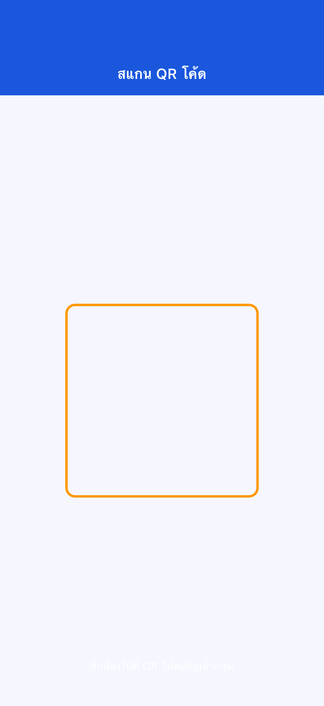
หากปฏิเสธสิทธิ์: ไปที่ "ตั้งค่า" → "แอป" → "OffLink" เพื่อเปลี่ยนแปลง
ขั้นตอนที่ 1: ทุกคนเชื่อมต่อ WiFi เดียวกัน
ขั้นตอนที่ 2: แตะ "โทรเลย" (ปุ่มสีเขียว)
ขั้นตอนที่ 3: ป้อนชื่อผู้ใช้

ขั้นตอนที่ 4: เลือกระดับและเริ่มโทร
ขั้นตอนที่ 5: การแจ้งเตือนคำเชิญโทรจะถูกส่งไปยังสมาชิกโดยอัตโนมัติ
ขั้นตอนที่ 1: แตะ "สร้างในฐานะโฮสต์" (ปุ่มสีน้ำเงิน)
ขั้นตอนที่ 2: ป้อนชื่อกลุ่มและรหัสผ่าน แล้วแตะ "สร้าง"
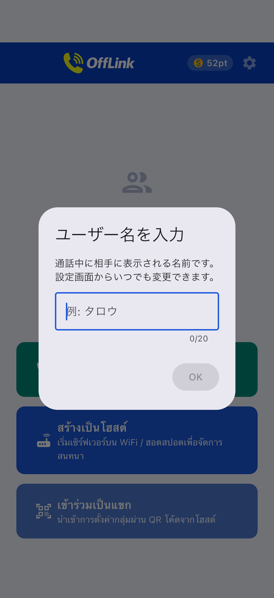
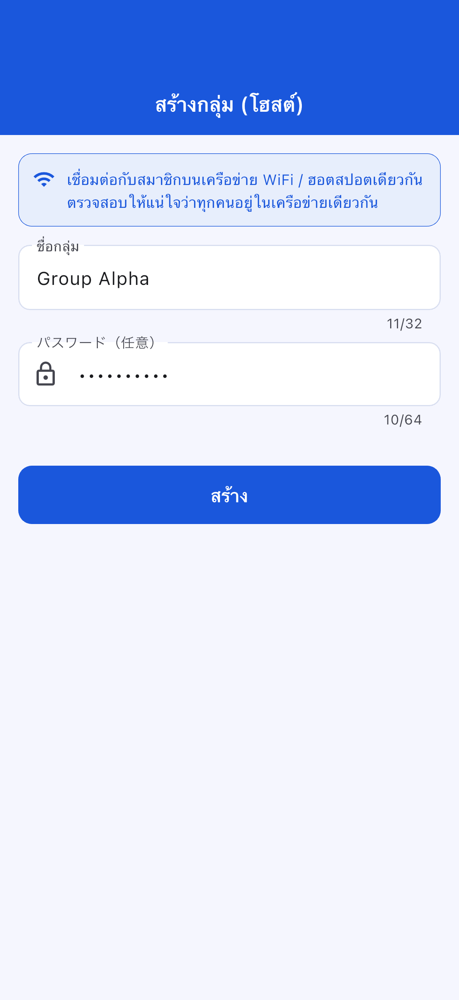
ขั้นตอนที่ 3: เลือกการดำเนินการสร้าง
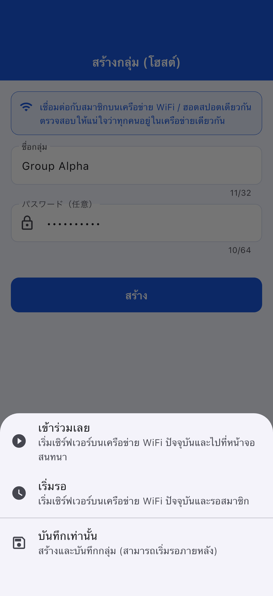
| การดำเนินการ | คำอธิบาย |
|---|---|
| เข้าร่วมทันที | เริ่มเซิร์ฟเวอร์และเริ่มโทร |
| เริ่มสแตนด์บาย | เริ่มเซิร์ฟเวอร์และรอ |
| บันทึกเท่านั้น | สามารถเริ่มได้ภายหลัง |
ขั้นตอนที่ 1: แตะ "เข้าร่วมในฐานะเกสต์" (ปุ่มสีฟ้าอ่อน)
ขั้นตอนที่ 2: เลือกวิธีเข้าร่วม
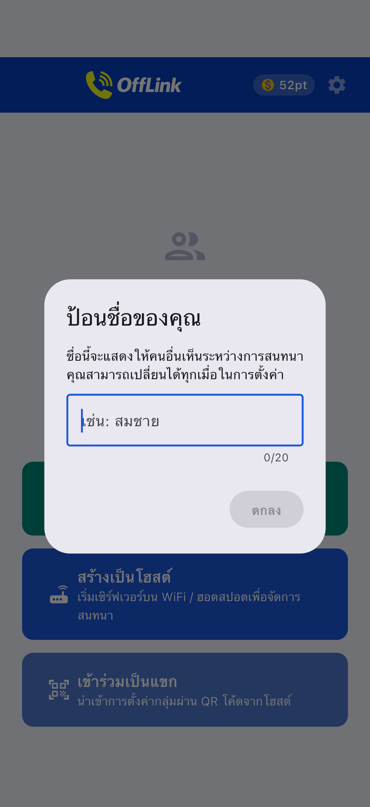
| วิธี | การดำเนินการ |
|---|---|
| 📱 สแกน QR โค้ด | สแกน QR ของโฮสต์ |
| 📋 วางโค้ด | วางโค้ดที่แชร์ |
| ✏️ ป้อนด้วยตนเอง | ป้อนโดยตรง |
แชร์ QR โค้ด (ฝั่งโฮสต์):
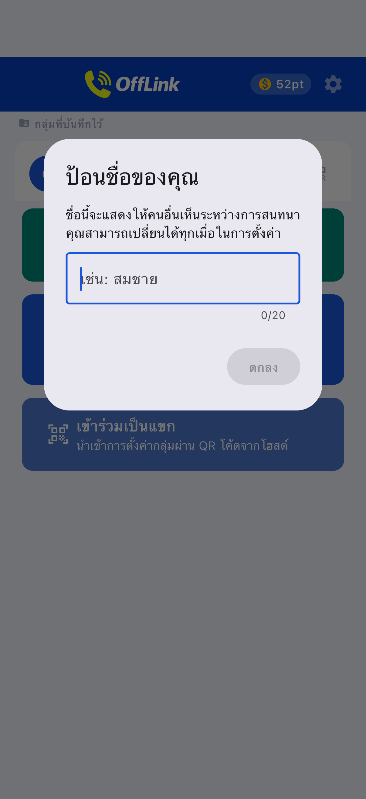
วางโค้ด (ฝั่งเกสต์):
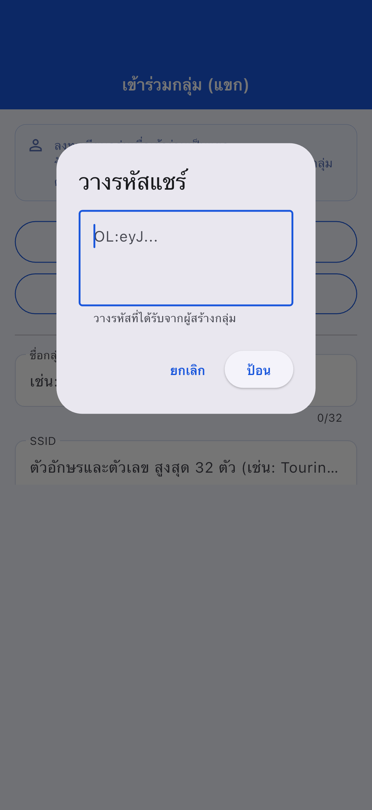
ขั้นตอนที่ 3: แตะ "ลงทะเบียน"
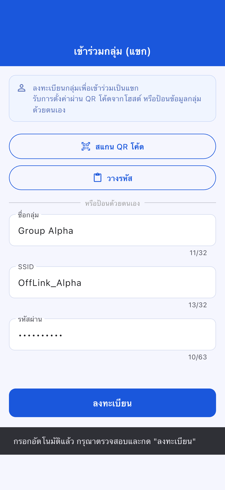

หน้าจอเข้าร่วมเกสต์:
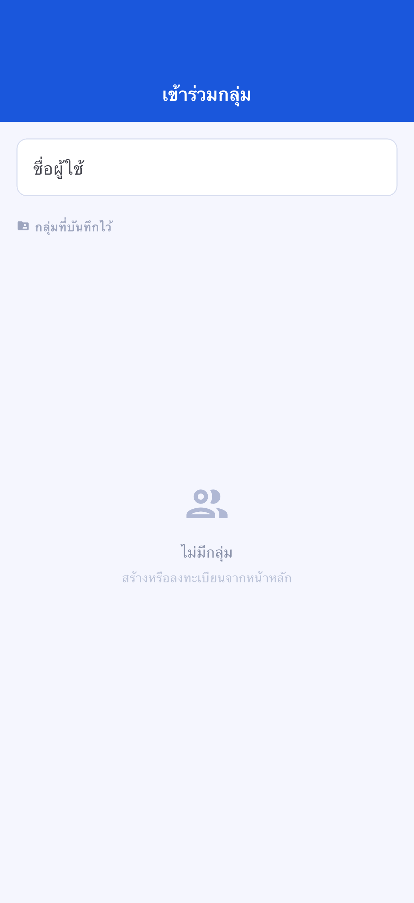
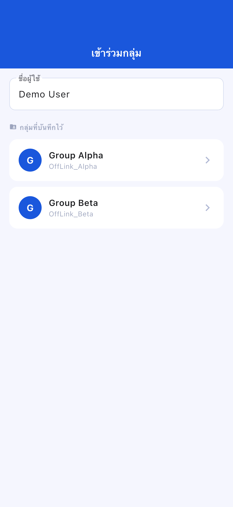
หน้าจอสแตนด์บาย:
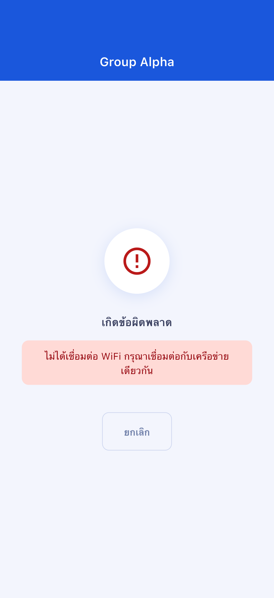
หน้าจอโทร:
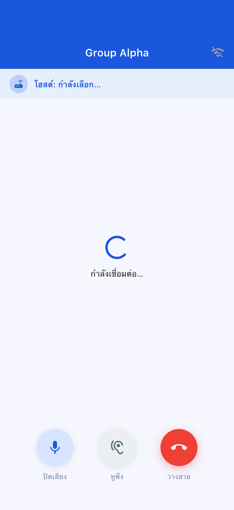
| ปุ่ม | ฟังก์ชัน |
|---|---|
| 🎤 ปิดเสียง | เปิด/ปิด ไมโครโฟน |
| 🔊 สลับเอาต์พุตเสียง | ลำโพง / Bluetooth / หูฟัง |
| 🔴 วางสาย | ออกจากการโทร |
| ระดับ | คะแนนที่ใช้ | ผู้เข้าร่วมสูงสุด |
|---|---|---|
| Standard | 10 pt | 4 คน |
| Large | 20 pt | 10 คน |
ไม่สามารถเปิดอัตโนมัติจากภายใน OffLink ให้ตั้งค่าด้วยตนเอง
ไปที่ "ตั้งค่า" → "แอป" → "OffLink" → "สิทธิ์" เพื่อเปลี่ยนแปลง
| รายการ | รายละเอียดข้อจำกัด |
|---|---|
| ผู้เข้าร่วมสูงสุด | Standard: 4 / Large: 10 |
| วิธีการโทร | WiFi LAN เท่านั้น |
| การทำงานเบื้องหลัง | จำกัดตามอุปกรณ์ |
| ขีดจำกัดการบันทึกกลุ่ม | Free: 5 / Premium: ไม่จำกัด |
| รายการ | แนะนำ |
|---|---|
| Android | 5.0+ (API 21+) |
| iOS | 13.0+ |
| แบตเตอรี่ | แนะนำ 80% ขึ้นไป |
| พื้นที่เก็บข้อมูล | 100MB ขึ้นไป |
| WiFi | เราเตอร์ / เทเธอริ่ง / WiFi พกพา |